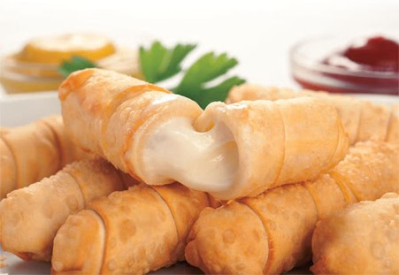

Tequeños

Description
Tequeños are a fried breaded cheese stick or a spear of bread dough with queso blanco (fresh cheese) stuffed in the middle, and is a popular meal or snack in Venezuela. To prepare it, the dough is wrapped around a cheesestick and formed into a breadstick so it can be fried in oil or sometimes oven-baked. Tequeños can be eaten for breakfast, as a side appetizer, or as a snack food at parties and weddings.
Tequeños originate in Venezuela. There are many theories and legends about the origin of their name, including that they were named after Los Teques for being invented in the kitchen of one of the wealthy families living there.
Ingredients
- 10 ounces all-purpose flour (about 2 cups)
- 1 teaspoon Kosher salt
- 6 tablespoons cold butter, cut into 1/4-inch cubes
- 1 large egg, lightly beaten
- 6 tablespoons cold water, plus more as needed
- 12 ounces queso blanco or queso de frier, cut into slices 1/2-inch x 1/2-inch x 2 1/2-inch
- Peanut oil, for frying
Steps
- Place flour and salt in the workbowl of a food processor fitted with a steel blade; pulse to combine. Sprinkle butter evenly over flour and pulse until butter is cut into pieces slightly smaller than a pea, about 8 1-second pulses. Transfer dough to a large bowl.
- Add in egg and water. Using a rubber spatula, press dough against side of bowl until it forms into a ball. If dough is not fully forming, add additional water 1 tablespoon at a time until it comes together. Press dough into a disc, wrap tightly in plastic wrap, and rest in refrigerator for 30 minutes.
- Unwrap dough and place on a lightly floured surface. Roll out into a square 1/8-inch thick. Cut off edges to create a 12-inch square. Cut square into strips 3/4-inch wide.
- Take one strip of dough and drape end over top of one cheese slice. Wrap entire cheese slice in dough on a diagonal, overlapping dough. Cover bottom of cheese slice in dough and pinch edges close to fully seal. Repeat with remaining cheese slices.
- Fill a cast iron skillet with 3/4-inch of oil. Heat oil to 400°F over high heat. Place tequeños in oil and fry until crust is golden brown and blistery, 3 to 5 minutes, turning halfway through. Transfer tequeños to a paper towel lined plate, let cool for 1 to 2 minutes, then serve immediately.